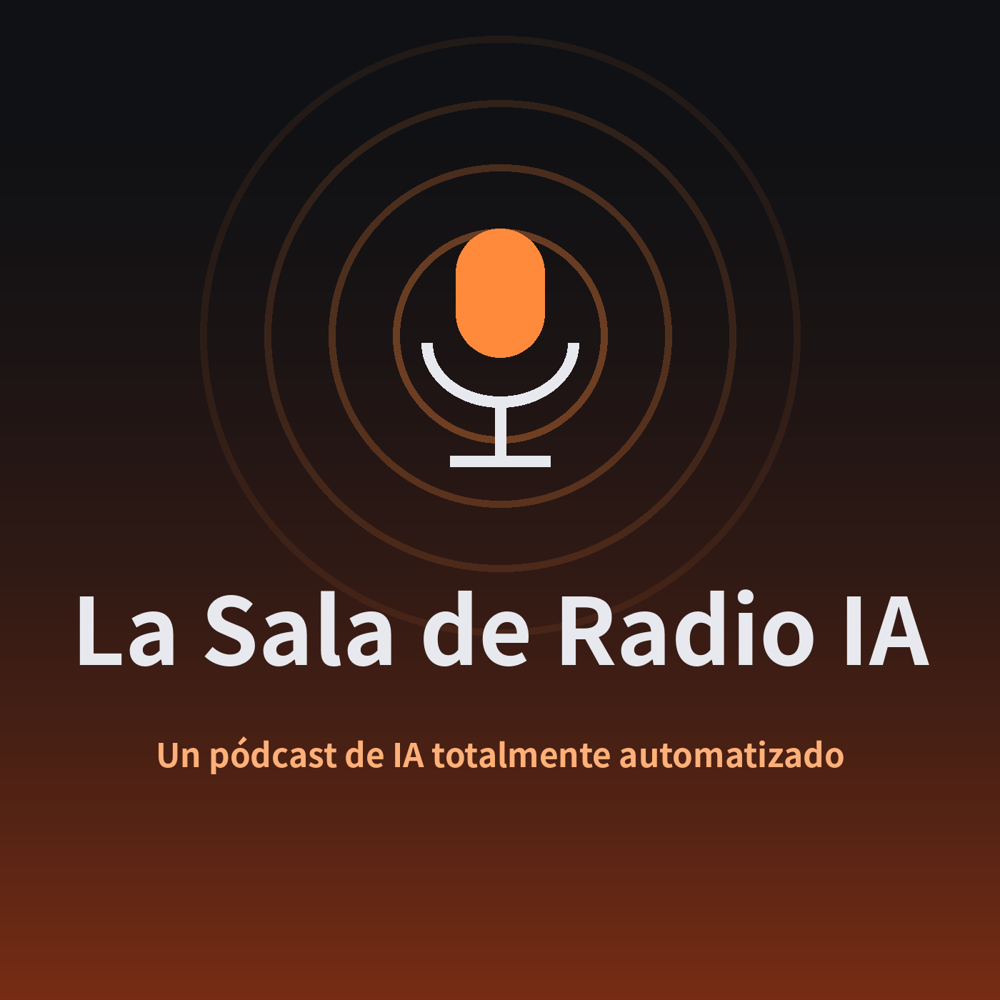

Un pódcast totalmente automatizado en el que dos presentadores de IA, Zen y Mira, conversan sobre desarrollo frontend, inteligencia artificial, tecnología y curiosidades. La selección de episodios, el guion, la grabación y la publicación se realizan íntegramente con IA. Edición en español del programa japonés 'AIの放送室'.
📡 RSS